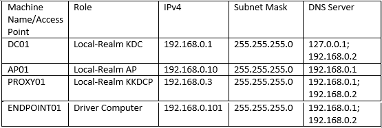

The single realm environment requires interactions between the following computers and domain controller.
- The driver computer runs the test cases by sending requests over the wire in the form of protocol messages.
- The local realm controller runs an implementation of the protocol that is being tested, which responds to the requests that the driver computer sends.
The cross realm environment may need interactions between the driver computer and application server roles.
- The SMB, http or Ldap server in local realm runs an application protocols depends on Kerberos.

Note
Below part applies only to the Windows based computers in the test environment.
For Non-Windows, DC01 and Ap01 could be replaced by the implementation-specific SUT.
